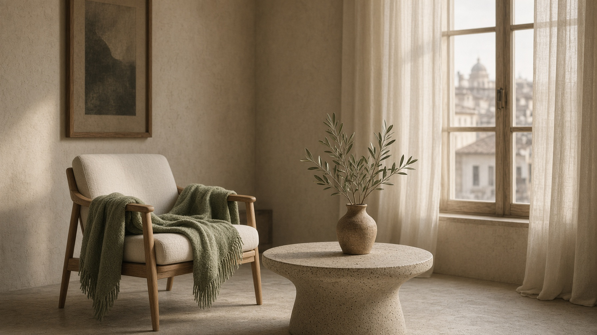

01
Consultazione
I primi incontri — il primo è gratuito — servono a mettere a fuoco i bisogni, i motivi della richiesta e il contesto familiare. Insieme definiamo se e come proseguire.
Dott.ssa Giovanna Corrado · Roma
Sono una psicologa iscritta all'Ordine degli Psicologi del Lazio (sez. A dell'Albo — n. 31352).
Mi sto formando come psicoterapeuta presso l'Istituto Santa Chiara, dove completo la specializzazione in Psicoterapia Cognitivo-Comportamentale integrata con la Neuropsicologia.
Accompagno bambini, adolescenti, giovani adulti e famiglie in percorsi di ascolto e supporto, in studio a Roma e online. Il primo colloquio è gratuito.
Chi sono
Mi sono laureata in Neuroscienze Cognitive e dal 14 aprile 2025 sono iscritta all'Albo degli Psicologi del Lazio, sezione A, n. 31352. Frequento la Scuola di Specializzazione in Psicoterapia Cognitivo-Comportamentale integrata con la Neuropsicologia presso l'Istituto Santa Chiara.
Da oltre due anni lavoro nell'età evolutiva e nei disturbi del neurosviluppo: accompagno bambini, adolescenti e giovani adulti in percorsi personalizzati di supporto e intervento. Ho maturato esperienza soprattutto nei disturbi dello spettro dell'autismo, ADHD, disturbi d'ansia e difficoltà del comportamento.
Nel lavoro clinico utilizzo anche strumenti di Comunicazione Aumentativa Alternativa (CAA) per sostenere l'intenzione comunicativa nei bambini con difficoltà del linguaggio e nell'autismo non verbale. Offro parent training e supporto genitoriale, per aiutare le famiglie a leggere i bisogni evolutivi ed emotivi dei propri figli.
Collaboro con l'équipe di Phren – Oltre le Parole, centro specializzato nella diagnosi e nel supporto all'età evolutiva. Parallelamente esercito la libera professione: ricevo in studio a Via Piave 41, 00187 Roma, e online.
Credo in interventi individualizzati, capaci di mettere in sinergia le funzioni cognitive, emotive e relazionali, valorizzando le potenzialità di ogni bambino e ragazzo.
Percorsi
I colloqui si svolgono in presenza, a Roma, oppure online. Offro consultazione e supporto psicologico a chi sente di aver bisogno di uno spazio di ascolto, per sé o per un figlio.
Ogni percorso è costruito nel rispetto dei tempi, dei bisogni e degli obiettivi della persona. L'approccio si ispira alla teoria comportamentale e integra competenze neuropsicologiche e strategie cognitivo-comportamentali.
01
I primi incontri — il primo è gratuito — servono a mettere a fuoco i bisogni, i motivi della richiesta e il contesto familiare. Insieme definiamo se e come proseguire.
02
Il percorso si costruisce sui tempi e sugli obiettivi di ciascuno: ascolto, strumenti cognitivo-comportamentali e, quando serve, CAA e lavoro con la scuola.
03
Un accompagnamento dedicato ai genitori, per comprendere i bisogni evolutivi ed emotivi dei figli e trovare strategie quotidiane sostenibili.
04
Le fasi conclusive si concordano insieme e si affrontano in modo progressivo, con attenzione al passaggio e a ciò che resta del lavoro fatto.
Aree di intervento
Percorsi individualizzati, CAA e lavoro sulla comunicazione funzionale, anche nei profili non verbali.
Sostegno a bambini e ragazzi con difficoltà di attenzione, impulsività e organizzazione del quotidiano.
Uno spazio per nominare la paura, le evitazioni e i pensieri che pesano, con strumenti concreti.
Comunicazione Aumentativa Alternativa per sostenere l'intenzione comunicativa e la relazione.
Lettura delle condotte difficili come messaggi, e costruzione di strategie condivise con la famiglia.
Parent training e supporto alle famiglie che attraversano una diagnosi o una fase delicata della crescita.

Lo studio
Un ambiente raccolto in Via Piave, a Roma — e la stessa attenzione, se preferisci, da casa tua.
Prenota
Colloqui di 50 minuti, dal lunedì al venerdì. Il primo incontro è gratuito. Dopo la conferma ricevi un codice da conservare. Nome e codice restano sul tuo dispositivo. Informativa privacy.
Orari disponibili
Le tue prenotazioni
Annulla toglie lo slot da questo dispositivo. .
Contatti
Per informazioni o per fissare un primo incontro, prenota dal calendario. Ricevo in presenza a Roma, in Via Piave, oppure online.
Studio
Via Piave 41Online
Colloqui in videochiamata, in tutta Italia